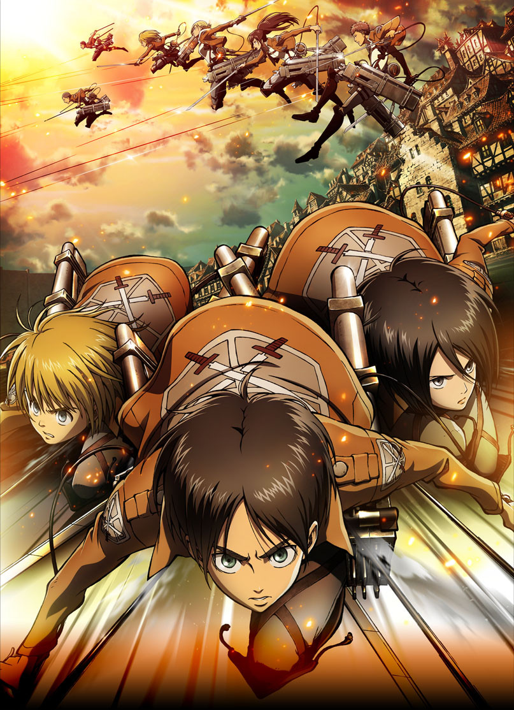
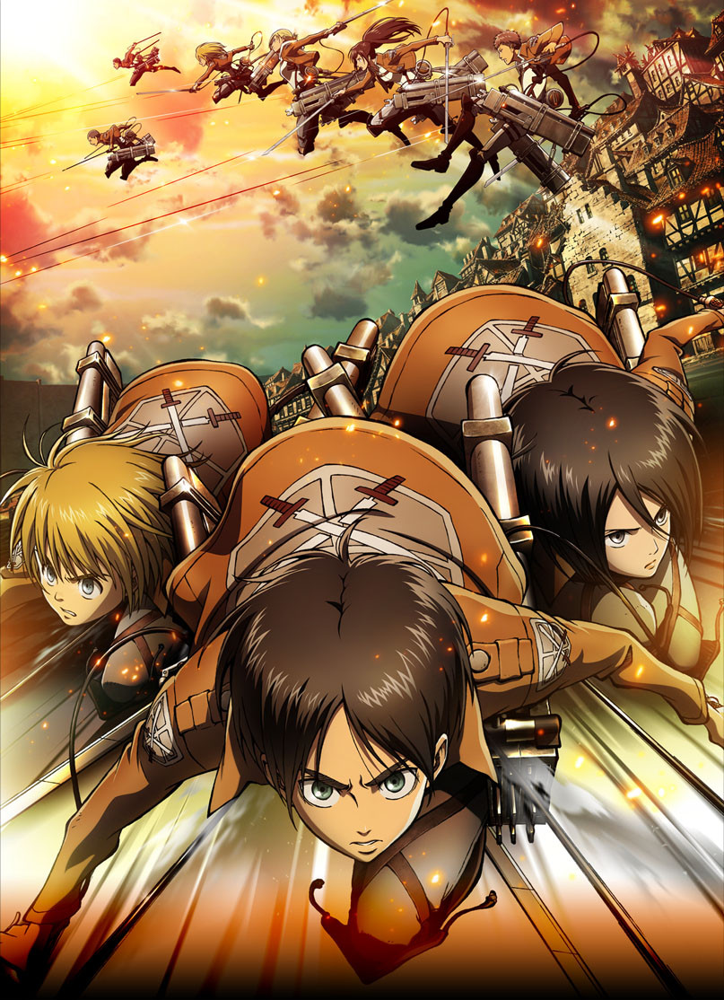

Ambientado en un mundo postapocalíptico donde los restos de la humanidad viven detrás de muros que los protegen de Titanes humanoides gigantes, Shingeki no Kyojin sigue al protagonista Eren Yeager, junto con sus amigos Mikasa Ackerman y Armin Arlert. Cuando un Titán Colosal rompe el muro de su ciudad natal, Titanes destruyen la ciudad y se comen a la madre de Eren. Jurando venganza, este se une al Cuerpo de Exploración, un grupo de soldados élite que lucha contra la enigmática amenaza. El anime narra el viaje de Eren con este equipo mientras luchan contra los Titanes al investigar su origen e historia.
 

| Nombre | Foto | Descripción |
|---|---|---|
| Eren Jaeger | |
El protagonista que busca venganza contra los titanes y descubrir la verdad detrás de ellos. |
| Mikasa Ackerman | Amiga de la infancia de Eren y guerrera excepcional, con un fuerte sentido de protección hacia él. | |
| Armin Arlert | |
Amigo cercano de Eren y Mikasa, su intelecto y estrategias son clave para la supervivencia del grupo. |